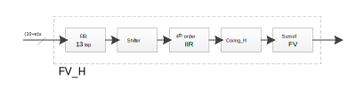

The BAF stats engine calculates the focus value (FV) of the current scene. Some AF algorithms use the FV to help evaluate scene changes, trigger searches, and determine lens positions. A properly tuned BAF stats engine is essential for projects relying on hardware stats. In most cases, the system-delivered defaults for BAF are sufficient and BAF tuning is not required. In some cases, optional tuning may be needed. For more information on BAF tuning, see Tune Bayer AF (BAF) stats engine.
The BAF stats engine consists of two parts:
The Y-conversion provides the option to combine RGB bayer pixel quads into one signal, given by specified weight for each channel. The gamma LUT is used to bring up the contrast in darker pixels in a low light environment.
The following figure shows the BAF stat engine block diagram for MSM8998. There are two filter outputs, one each for horizontal and vertical directions. Horizontal down-scaling can be employed for both horizontal and vertical filter sets.
Horizontal filter set has a 13-tap FIR filter and a fourth-order IIR filter; vertical set has a fourth-order IIR filter and no FIR filter. The filter block consists of a bit shifter between an FIR filter and an IIR filter to ensure that the input of the IIR is normalized. Following the IIR, the signal goes through a coring module to remove noise and then the accumulator adds up the FV.
There are four submodules in the BAF stats engine:
Filter
The following figure shows the submodules in the filters shown in the previous block diagram.
